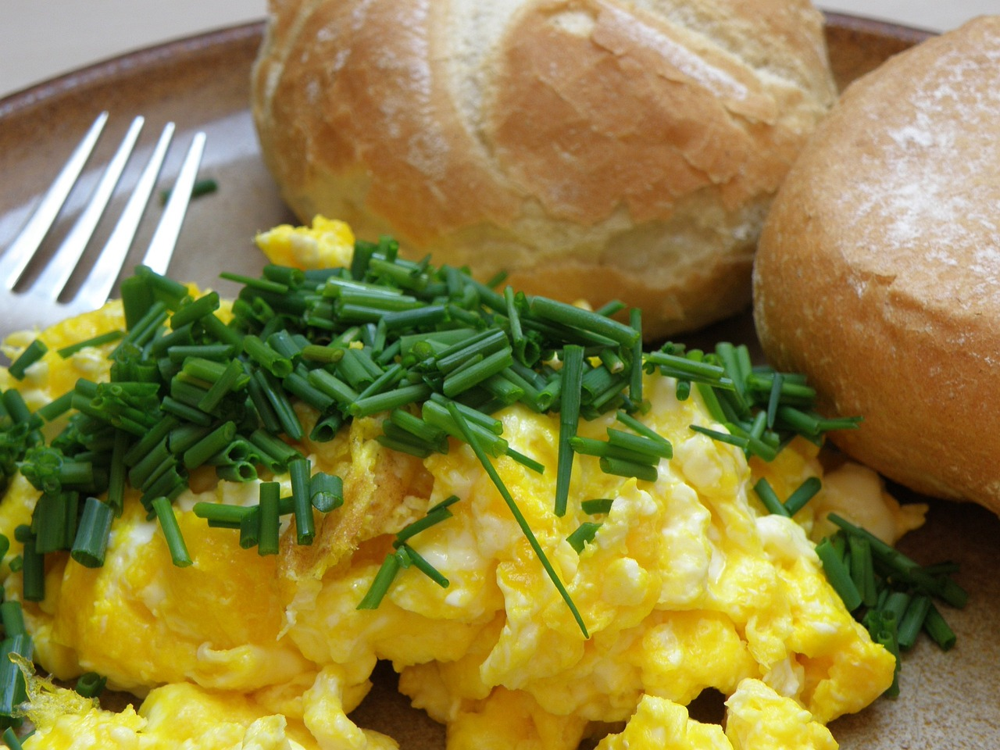

Duckling's Quacking Scrambled Eggs

Duckling's Ingredients
- eggs
- butter
- salt
- chilli flakes
Even little ducks can follow these steps
- Melt butter over low to medium heat
- Mix eggs in a cup, then pour them on the melted butter
- Immediately start stirring
- Keep stirring until you reach desired consistency. We'll keep them more liquidy because ducks like to swim
- Top with salt and chilli flakes